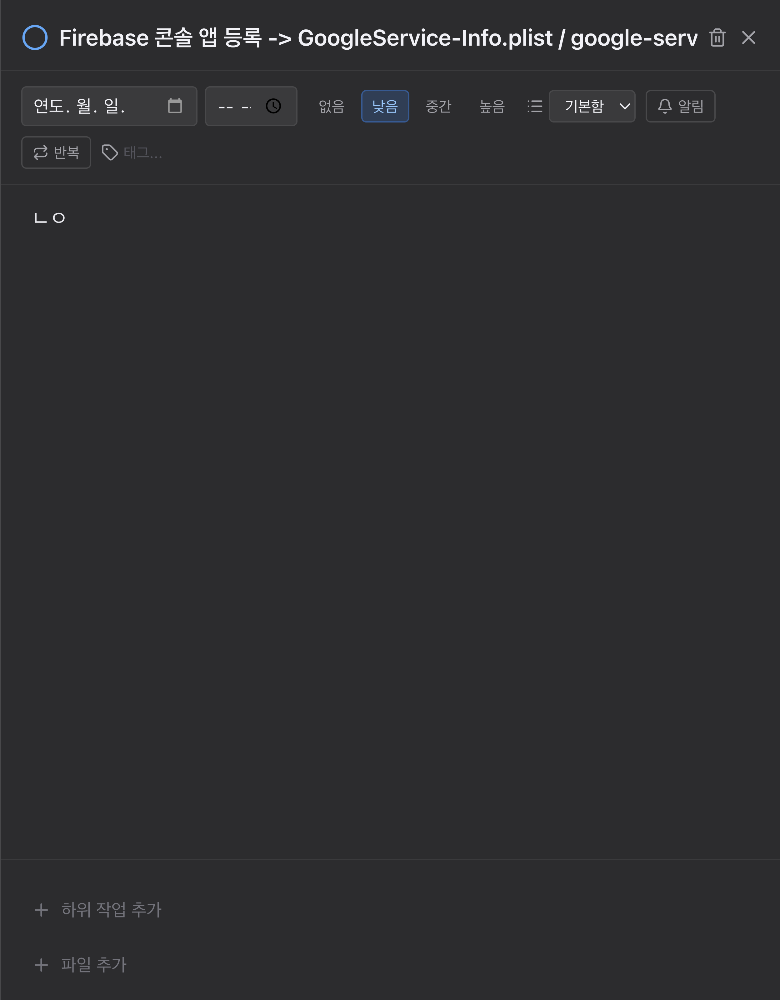

상세 패널 재설계 결과
전부 반영했습니다. 3/3 합의 5건, 2/3 합의 3건, 단독 지적 중 실효 있는 6건까지 넣었습니다. 핵심 수치: 빈 메모가 373px → 120px로 줄고 하위작업·첨부가 화면 안으로 들어왔습니다. 원인은 예상과 달랐습니다 — 레이아웃이 아니라 에디터가 넣는
padding-bottom: 320px이었고, 실제 앱을 CDP로 측정해서 찾았습니다. 헬스: typecheck 0 · lint 0 errors · 566 tests green · 빌드 정상.
1 · 전후 비교


실측 높이 변화 (패널 800px 기준)
| 영역 | 변경 전 | 변경 후 | 비고 |
|---|---|---|---|
| 헤더 | 57px | 75px | 제목이 2줄까지 늘어난 만큼 |
| 메타 | 90px (2~3줄 가변) | 253px (고정 7행) | 라벨이 생기고 줄바꿈이 사라짐 |
| 메모 | 373px (67%) | 120px | 내용만큼만 차지 |
| 하위작업·첨부 | 120px (바닥 15%, 별도 스크롤) | 151px (본문 흐름 안) | 스크롤 하나로 통합 |
2 · 반영 내역
3/3 합의 전원 지적
| 항목 | 무엇을 했나 | 상태 |
|---|---|---|
| 빈 메모가 패널의 3분의 2 점유 | 본문을 스크롤 컨테이너 하나로 합치고 메모는 min-h-[7.5rem]만 보장. 실제 원인은 에디터의 padding-bottom: 320px(스크롤 여유분)이라 그것을 1.5rem으로 축소. CM6 placeholder() 추가 | 완료 |
| 메타가 폭에 따라 요동 (기본 폭 400px에서 3줄) | flex-wrap → grid-cols-[4.5rem_minmax(0,1fr)] 라벨 2열. 일정(마감일·알림·반복) → 분류(우선순위·목록·태그) 순으로 고정. 라벨 i18n 키 11개 추가(ko/en) | 완료 |
| 제목이 잘리는데 말줄임·툴팁 없음 | input → 2줄까지 자라는 textarea([field-sizing:content]) + title 속성 + 포커스 링 + IME 가드 | 완료 |
| 회색 3종 대비 미달 | 추가 버튼 2.96 → 5.49:1, 태그 placeholder 1.85 → 5.49:1, 구조 구분선 1.23 → 1.53:1 | 완료 |
| 빈 상태에 섹션 머리말 없음 | 하위작업·첨부 헤더를 0개여도 표시(하위 작업 0/0, 첨부 0). 자식의 mt-3 제거로 이중 간격 해소 | 완료 |
2/3 합의 둘이 지적
| 항목 | 무엇을 했나 | 상태 |
|---|---|---|
| 컨트롤 높이·모서리 제각각 (30/26/26/20px, 모서리 3종) | 속성 트리거를 h-8 rounded-md px-2.5 text-[13px]로 통일. 값이 없는 컨트롤은 테두리를 지워 물러남 | 완료 |
네이티브 <select>만 이질적 | 벤더링된 DropdownMenu로 교체(SortMenu 하우스 패턴). macOS 크롬이 사라짐 | 완료 |
| 우선순위가 필터 툴바처럼 보이고 '낮음'이 가장 강한 물체 | radiogroup 세그먼티드로 묶고, 채운 면은 medium/high만. low/none은 테두리로 선택 표시. 앱 전체 medium 색을 amber로 통일(yellow/amber가 세 군데 섞여 있었음) | 완료 |
단독 지적 한 곳
| 항목 | 무엇을 했나 | 상태 |
|---|---|---|
| 마감일이 네이티브 입력이라 빈 상태가 고장처럼 보이고 조작이 느림 | DueDatePicker 신설 — 오늘·내일·이번 주말·다음 주 칩 + 날짜/시각 + 지우기. 실동작 확인(칩 클릭 → 트리거가 날짜로 갱신) | 완료 |
| 리사이즈 핸들이 첫 탭 스톱인데 키보드로 아무 일도 안 함 | role="separator" + 화살표 키(Shift로 64px) + 더블클릭 기본값 복귀. 전에는 폭을 흐트러뜨리면 되돌릴 방법이 없었음 | 완료 |
| 드래그 중 커서·선택이 샘 | 드래그 동안 body의 커서·선택 고정, 종료·언마운트 시 복구. 핸들 8px → 12px | 완료 |
| 하위작업 추가가 두 번 클릭 | 입력을 상시 노출(showInput 상태와 포커스 이펙트 제거). 가운데 목록의 '할 일 추가'와 같은 동작 | 완료 |
| 헤더 삭제·닫기가 16/18px 맨아이콘 | 둘 다 p-1.5 + hover 면색(28px 타깃), 그룹으로 묶고 아이콘 크기 통일 | 완료 |
| 스크롤 컨테이너가 둘 | 본문 통합으로 함께 해소 | 완료 |
반영하지 않은 것
메모에 별도 면색(bg-surface-canvas) 깔기 — 디자인 렌즈 단독 제안. 메모가 120px로 줄고 위아래 구분선이 surface-line으로 진해진 지금은 figure/ground가 이미 생겼습니다. 여기에 면색까지 넣으면 패널 안에 상자가 하나 더 생겨 오히려 층이 늘어납니다. 실제 화면을 보고 판단했고, 필요하면 한 줄로 되돌릴 수 있습니다.
제목을 클릭 전까지 읽기 전용 line-clamp-2로 두기 — Codex 단독 제안. 편집 모드 전환이 한 단계 늘어 상시 편집 가능한 지금 동작보다 느려집니다. textarea가 이미 두 줄까지 보여주므로 목적(제목 전체 확인)은 달성됐습니다.
빈 상태를 점선 테두리 한 줄로 압축 — Codex 단독 제안. 하위작업 입력을 상시 노출로 바꾸면서 그 자리가 이미 입력칸이 됐습니다. 점선까지 더하면 중복입니다.
3 · 검증
- 정적 — typecheck 0 · biome lint 0 errors(경고 7은 기존 테스트 파일) · vitest 566 passed · 프로덕션 빌드 3개 산출물 정상
- 실행 — dev 앱을 CDP로 붙어 각 영역의 실제 렌더링 높이를 측정(위 표의 수치는 전부 실측). 마감일 픽커는 칩 클릭 → 트리거 라벨 갱신까지 확인
- 데이터 — QA 중 설정한 마감일 1건은 원복했습니다. 앱 데이터에 남은 변경은 없습니다
4 · 남은 것
이번 재설계는 상세 패널에 한정했습니다. 3자 평가에서 나왔지만 범위를 넘는 것들:
- 목록과 상세의 우선순위 표기 통일 — 목록은
⚑ 낮음텍스트, 상세는 세그먼티드입니다. 같은 데이터를 두 어휘로 말합니다(디자인 렌즈 지적). 목록 쪽을 건드리는 일이라 별도 판단이 필요합니다. - 패널을 열 때 포커스가 아무 데도 가지 않음 — 새 태스크일 때만 제목에 포커스를 주는 식의 규칙이 필요합니다.
- 시각 입력 아이콘 색 — Codex 지적. 지금은
DueDatePicker팝오버 안으로 들어가 노출이 줄었지만, 근본적으로는color-scheme: dark적용이 맞습니다.